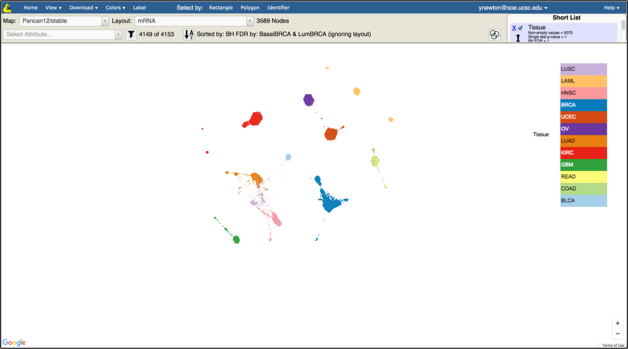
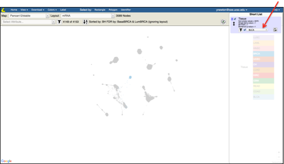
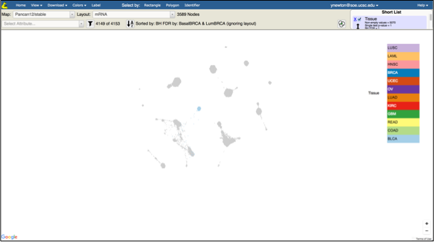
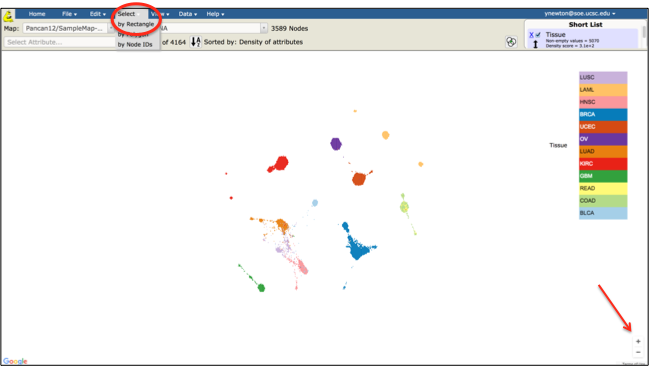
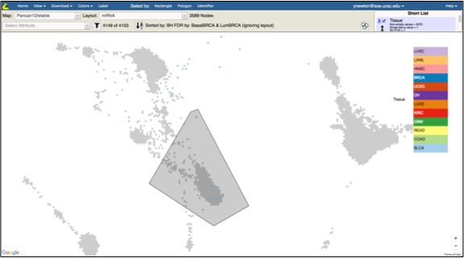
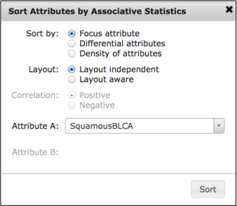
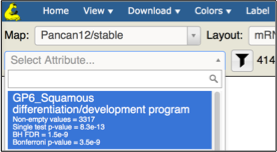

Objective: Identify squamous-like bladder cancer samples from the TCGA PanCan-12 mRNA dataset.
Skills Covered:
- Filtering the samples in the map using a short list selection.
- Creating a group using polygon selection.
- Sorting sample attributes based on their association with a custom group.
Steps:
- In the Tumor Map, make sure the mRNA layout is selected

- In the Short List, make sure Tissue is checked and no other attributes are checked
- Under the Tissue attribute click on the filter checkbox and select BLCA in the drop down

- Observe that only BLCA samples are now colored in the map

- Locate the zoom in/out control in the bottom of the right of the map screen and click on the + several times to zoom in to see BLCA tumors closer

- Click on Select By drop down and select Polygon
- Select squamous BLCA samples (those in the LUSC and HNSC region)

- Specify the name of the group (e.g. SquamousBLCA) in the popup box
- Click on the Sort Attributes button (next to Sorted By label)
- In the popup click on Focus attribute radio button
- Select SquamousBLCA as the focus attribute
- Click Sort

- Wait until Computing statistics now … disappears
- Observe that the top differentiating attribute in the Select Attribute drop down list is squamous gene program (see the illustration)
